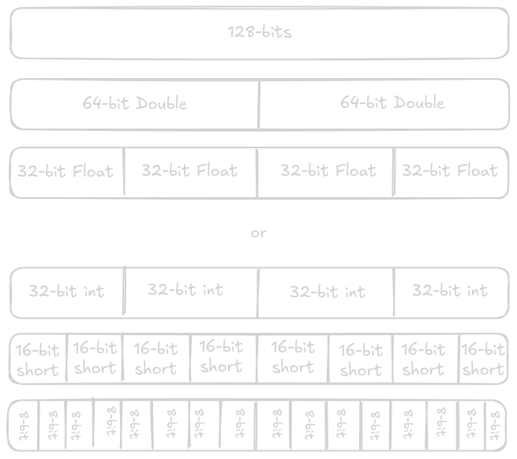

tictactoesimdeez
SIMD
SIMD stands for single instruction, multiple data. This would be in contract to SISD, or single instruction, single data. As stated in the name, this will allow us to pass multiple piece of data into a single operation. SIMD is an entire extension set to the original x86 instruction set, which may or may not be implemented by your specific processor. These instructions allow a processor to operate on pices of data larger than your architecture may normally support. In this post we will look at SSE4, which supports 128-bit registers, although many modern x64 processors have support for 256, and 512-bit registers.
It is important to understand that the instruction in SIMD means that this maps 1-to-1 with an assembly instruction on your processor. This means that prior to calling a SIMD instruction we will need to populate one of the SIMD registers with the data we want to work on. Another important feature of SIMD instructions is that they can change what size of data they are working on.

For our simple introduction to SIMD we are going to use these instructions to implment a giant game of tic-tac-toe, specifically a 16x16 grid.
Applications
While there are many different instructions supported under the SSE4 extention we will only focus on a subset of instructions to keep things simple. Specifically xor and test_all_zeros, the latter is fairly self explainatory, treating the entire 128-bit register as one large integer and checking if it is equal to 0. A SIMD xor instruction is no different than the 64-bit xor you are used to using, the algorithm/implementation for xor always stays the same.
So why would we need xor to play tic-tac-toe? The reason is